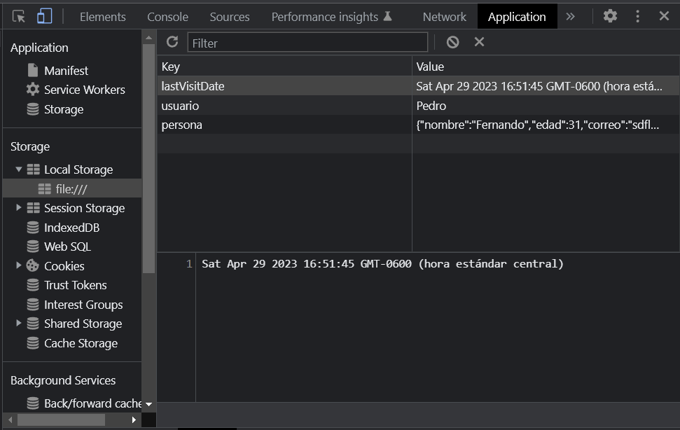

If I want to see the data store: open the page in Chrome browser and see aplicacion into developer tools. Check localstorage.html to see the code implemented to Set and Get data in localStorage
the value stores in the localstorage (it just stores strings)
localStorage.setItem('num', 1);
const setLocalStorage = () => { let persona = { nombre: 'Fernando', edad: 31, correo: 'sdflk@com', coords: { lat: 10, lng: -5, }, }; let nombre = 'Pedro'; localStorage.setItem('usuario', nombre); // local just accept strings and not objects localStorage.setItem('persona', JSON.stringify(persona)); };
I have to remember I can just save strings in my localstore, I had to convert my object to a string
